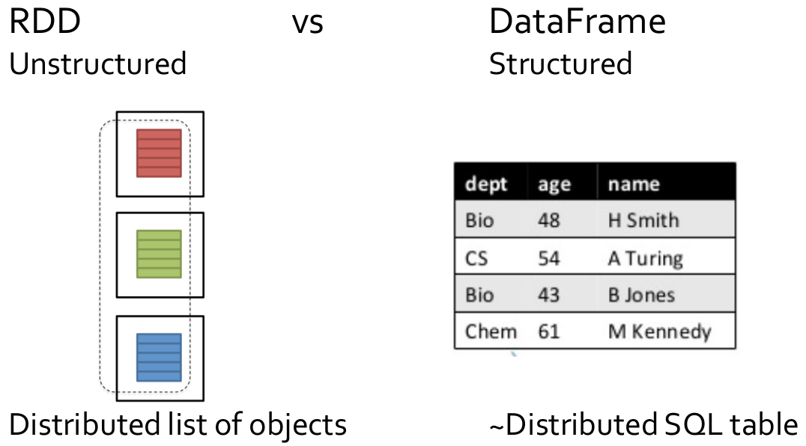

18 Spark SQL and DataFrames
Spark SQL
Spark SQL is the Spark component for structured data processing. It provides a programming abstraction called Dataframe and can act as a distributed SQL query engine: the input data can be queried by using
- Ad-hoc methods
- Or an SQL-like language
Spark SQL vs Spark RDD APIs
The interfaces provided by Spark SQL provide more information about the structure of both the data and the computation being performed. Spark SQL uses this extra information to perform extra optimizations based on a “SQL-like” optimizer called Catalyst, and so programs based on Dataframe are usually faster than standard RDD-based programs.

DataFrames
A DataFrame is a distributed collection of structured data. It is conceptually equivalent to a table in a relational database, and it can be created reading data from different types of external sources (CSV files, JSON files, RDBMs,…). A DataFrame benefits from Spark SQL optimized execution engine exploiting the information about the data structure.
All the Spark SQL functionalities are based on an instance of the pyspark.sql.SparkSession class
To import it in a standalone application use
To instance a SparkSession object use
To close a SparkSession use the SparkSession.stop() method
DataFrames
A DataFrame is a distributed collection of data organized into named columns, equivalent to a relational table: DataFrames are lists of Row objects.
The classes used to define DataFrames are
pyspark.sql.DataFramepyspark.sql.Row
DataFrames can be created from different sources
- Structured (textual) data files (e.g., csv files, json files);
- Existing RDDs;
- Hive tables;
- External relational databases.
Creating DataFrames from csv files
Spark SQL provides an API that allows creating DataFrames directly from CSV files. The creation of a DataFrame from a csv file is based the load(path) method of the pyspark.sql.DataFrameReader class, where path is the path of the input file. To get a DataFrameReader using the the read() method of the SparkSession class.
Create a DataFrame from a csv file (“people.csv”) containing the profiles of a set of people. Each line of the file contains name and age of a person, and age can assume the null value (i.e., it can be missing). The first line contains the header (i.e., the names of the attributes/columns).
Example of csv file
name,age
Andy,30
Michael,
Justin,19Notice that the age of the second person is unknown.
## Create a Spark Session object
spark = SparkSession.builder.getOrCreate()
## Create a DataFrame from people.csv
df = spark.read.load(
"people.csv",
format="csv",
header=True,
inferSchema=True
)format="csv" |
This is used to specify the format of the input file |
header=True |
This is used to specify that the first line of the file contains the name of the attributes/columns |
inferSchema=True |
This method is used to specify that the system must infer the data types of each column. Without this option all columns are considered strings |
Creating DataFrames from JSON files
Spark SQL provides an API that allows creating a DataFrame directly from a textual file where each line contains a JSON object. Hence, the input file is not a standard JSON file: it must be properly formatted in order to have one JSON object (tuple) for each line. So, the format of the input file must be compliant with the JSON Lines text format, also called newline-delimited JSON.
The creation of a DataFrame from JSON files is based on the same method used for reading csv files, that is the load(path) method of the pyspark.sql.DataFrameReader class, where path is the path of the input file. To get a DataFrameReader use the read() method of the SparkSession class.
or
The same API allows also reading standard multiline JSON files by setting the multiline option to true by setting the argument multiLine=True on the defined DataFrameReader for reading standard JSON files (this feature is available since Spark 2.2.0).
Pay attention that reading a set of small JSON files from HDFS is very slow.
Create a DataFrame from a JSON Lines text formatted file (“people.json”) containing the profiles of a set of people: each line of the file contains a JSON object containing name and age of a person. Age can assume the null value.
Example of JSON file
{"name":"Michael"}
{"name":"Andy", "age":30}
{"name":"Justin", "age":19}Notice that the age of the first person is unknown.
## Create a Spark Session object
spark = SparkSession.builder.getOrCreate()
## Create a DataFrame from people.csv
df = spark.read.load(
"people.json",
format="json"
)format="json" |
This method is used to specify the format of the input file. |
Create a DataFrame from a folder containing a set of standard multiline JSON files: each input JSON file contains the profile of one person, in particular each file contains name and age of a person. Age can assume the null value.
Example of JSON file
{"name":"Andy", "age":30}## Create a Spark Session object
spark = SparkSession.builder.getOrCreate()
## Create a DataFrame from people.csv
df = spark.read.load(
"folder_JSONFiles/",
format="json",
multiLine=True
)multiLine=True |
This multiline option is set to true to specify that the input files are standard multiline JSON files. |
Creating DataFrames from other data sources
The DataFrameReader class (the same we used for reading a json file and store it in a DataFrame) provides other methods to read many standard (textual) formats and read data from external databases:
- Apache parquet files
- external relational database, through a JDBC connection
- Hive tables
- …
Creating DataFrames from RDDs or Python lists
The content of an RDD of tuples or the content of a Python list of tuples can be stored in a DataFrame by using the spark.createDataFrame(data,schema) method, where data is a RDD of tuples or Rows, Python list of tuples or Rows, or pandas DataFrame, and schema is a list of string with the names of the columns/attributes. schema is optional, and if not specified the column names are set to _1, _2, …, _n for input RDDs/lists of tuples.
Create a DataFrame from the following Python list
The column names must be set to “age” and “name”.
From DataFrame to RDD
The rdd method of the DataFrame class returns an RDD of Row objects containing the content of the DataFrame which it is invoked on. Each Row object is like a dictionary containing the values of a record: it contains column names in the keys and column values in the values.
Usage of the Row class
The fields in it can be accessed:
- like attributes:
row.key, wherekeyis a column name; - like dictionary values:
row["key"]; - using
for key in rowwill search through row keys.
Also the asDict() method returns the Row content as a Python dictionary.
- Create a DataFrame from a csv file containing the profiles of a set of people: each line of the file contains name and age of a person, but the first line contains the header (i.e., the name of the attributes/columns);
- Transform the input DataFrame into an RDD, select only the name field/column and store the result in the output folder.
## Create a Spark Session object
spark = SparkSession.builder.getOrCreate()
## Create a DataFrame from people.csv
df = spark.read.load(
"people.csv",
format="csv",
header=True,
inferSchema=True
)
## Define an RDD based on the content of
## the DataFrame
rddRows = df.rdd
## Use the map transformation to extract
## the name field/column
rddNames = rddRows.map(lambda row: row.name)
## Store the result
rddNames.saveAsTextFile(outputPath)Operations on DataFrames
A set of specific methods are available for the DataFrame class (e.g., show(), printSchema(), count(), distinct(), select(), filter()), also the standard collect() and count() actions are available.
Show method
The show(n) method of the DataFrame class prints on the standard output the first n of the input DataFrame. Default value of n is 20.
- Create a DataFrame from a csv file containing the profiles of a set of people;
- Print the content of the first 2 people (i.e., the first 2 rows of the DataFrame).
The content of people.csv is
name,age
Andy,30
Michael,
Justin,19PrintSchema method
The printSchema() method of the DataFrame class prints on the standard output the schema of the DataFrame (i.e., the name of the attributes of the data stored in the DataFrame).
Count method
The count() method of the DataFrame class returns the number of rows in the input DataFrame.
Distinct method
The distinct() method of the DataFrame class returns a new DataFrame that contains only the unique rows of the input DataFrame. A shuffle phase is needed.
Pay attention that the distinct operation is always an heavy operation in terms of data sent on the network.
- Create a DataFrame from a csv file containing the names of a set of people. The first line is the header.
- Create a new DataFrame without duplicates.
The content of “names.csv” is
name
Andy
Michael
Justin
MichaelSelect method
The select(col1, ..., coln) method of the DataFrame class returns a new DataFrame that contains only the specified columns of the input DataFrame. Use * as special column to select all columns
Pay attention that the select method can generate errors at runtime if there are mistakes in the names of the columns.
- Create a DataFrame from the “people2.csv” file that scontains the profiles of a set of people
- The first line contains the header;
- The others lines contain the users’ profiles: one line per person, and each line contains name, age, and gender of a person.
- Create a new DataFrame containing only name and age of the people.
The “people2.csv” has the following structure
name,age,gender
Paul,40,male
John,40,maleSelectExpr method
The selectExpr(expression1,...,expressionN) method of the DataFrame class is a variant of the select method, where expr can be a SQL expression.
- Create a DataFrame from the “people2.csv” file that scontains the profiles of a set of people
- The first line contains the header;
- The others lines contain the users’ profiles: one line per person, and each line contains name, age, and gender of a person.
- Create a new DataFrame containing only name and age of the people.
- Create a new DataFrame containing only the name of the people and their age plus one. Call the age column as “new_age”.
The “people2.csv” has the following structure
name,age,gender
Paul,40,male
John,40,male## Create a Spark Session object
spark = SparkSession.builder.getOrCreate()
## Create a DataFrame from people2.csv
df = spark.read.load(
"people2.csv",
format="csv",
header=True,
inferSchema=True
)
dfNamesAges = df.selectExpr("name","age")
dfNamesAgesMod = df.selectExpr("name", "age + 1 AS new_age")- Create a DataFrame from the “people2.csv” file that contains the profiles of a set of people
- The first line contains the header;
- The others lines contain the users’ profiles: each line contains name, age, and gender of a person.
- Create a new DataFrame containing the same columns of the initial dataset plus an additional column called “newAge” containing the value of age incremented by one.
The “people2.csv” has the following structure
name,age,gender
Paul,40,male
John,40,male## Create a Spark Session object
spark = SparkSession.builder.getOrCreate()
## Create a DataFrame from people.csv
df = spark.read.load(
"people2.csv",
format="csv",
header=True,
inferSchema=True
)
## Create a new DataFrame with four columns:
## name, age, gender, newAge = age +1
dfNewAge = df.selectExpr(
"name",
"age",
"gender",
"age+1 as newAge"
)"... as newAge" |
This part of the expression is used to specify the name of the column associated with the result of the first part of the expression in the returned DataFrame. Without this part of the expression, the name of the returned column would be “age+1”. |
Filter method
The filter(conditionExpr) method of the DataFrame class returns a new DataFrame that contains only the rows satisfying the specified condition. The condition is expressed as a Boolean SQL expression.
Pay attention that this version of the filter method can generate errors at runtime if there are errors in the filter expression: the parameter is a string and the system cannot check the correctness of the expression at compile time.
- Create a DataFrame from the “people.csv” file that contains the profiles of a set of people
- The first line contains the header;
- The others lines contain the users’ profiles: each line contains name and age of a person.
- Create a new DataFrame containing only the people with age between 20 and 31.
Where method
The where(expression) method of the DataFrame class is an alias of the filter(conditionExpr) method.
Join
The join(right, on, how) method of the DataFrame class is used to join two DataFrames. It returns a DataFrame that contains the join of the tuples of the two input DataFrames based on the on join condition.
on specifies the join condition. It can be:
- a string: the column to join
- a list of strings: multiple columns to join
- a condition/an expression on the columns (e.g.,
joined_df = df.join(df2, df.name == df2.name))
how specifies the type of join
inner(default type of join)crossouterfullfull_outerleftleft_outerrightright_outerleft_semileft_anti
Pay attention that this method: can generate errors at runtime if there are errors in the join expression.
- Create two DataFrames
- One based on the “people_id.csv” file that contains the profiles of a set of people, the schema is: uid, name, age;
- One based on the liked_sports.csv file that contains the liked sports for each person, the schema is: uid, sportname. 2.Join the content of the two DataFrames (uid is the join column) and show it on the standard output.
## Create a Spark Session object
spark = SparkSession.builder.getOrCreate()
## Read people_id.csv and store it in a DataFrame
dfPeople = spark.read.load(
"people_id.csv",
format="csv",
header=True,
inferSchema=True
)
## Read liked_sports.csv and store it in a DataFrame
dfUidSports = spark.read.load(
"liked_sports.csv",
format="csv",
header=True,
inferSchema=True
)
## Join the two input DataFrames
dfPersonLikes = dfPeople.join(
dfUidSports,
dfPeople.uid == dfUidSports.uid
)
## Print the result on the standard output
dfPersonLikes.show()dfPeople.uid == dfUidSports.uid |
Specify the join condition on the uid columns. |
- Create two DataFrames
- One based on the “people_id.csv” file that contains the profiles of a set of people, the schema is: uid, name, age;
- One based on the banned.csv file that contains the banned users, the schema is: uid, bannedmotivation.
- Select the profiles of the non-banned users and show them on the standard output.
## Create a Spark Session object
spark = SparkSession.builder.getOrCreate()
## Read people_id.csv and store it in a DataFrame
dfPeople = spark.read.load(
"people_id.csv",
format="csv",
header=True,
inferSchema=True
)
## Read banned.csv and store it in a DataFrame
dfBannedUsers = spark.read.load(
"banned.csv",
format="csv",
header=True,
inferSchema=True
)
## Apply the Left Anti Join on the two input DataFrames
dfSelectedProfiles = dfPeople.join(
dfBannedUsers,
dfPeople.uid == dfBannedUsers.uid,
"left_anti"
)
## Print the result on the standard output
dfSelectedProfiles.show()dfPeople.uid == dfUidSports.uid |
Specify the (anti) join condition on the uid columns. |
"left_anti" |
Use Left Anti Join. |
Aggregate functions
Aggregate functions are provided to compute aggregates over the set of values of columns. Some of the provided aggregate functions/methods are
avg(column)count(column)sum(column)abs(column)- …
Each aggregate function returns one value computed by considering all the values of the input column.
The agg(expr) method of the DataFrame class is used to specify which aggregate function we want to apply on one input column. The result is a DataFrame containing one single row and one single column, and the name of the return column is “function_name(column)”.
Pay attention that this methods can generate errors at runtime (e.g., wrong attribute name, wrong data type).
- Create a DataFrame from the “people.csv” file that contains the profiles of a set of people (each line contains name and age of a person)
- The first line contains the header;
- The others lines contain the users’ profiles.
- Create a Dataset containing the average value of age.
Input file example
name,age
Andy,30
Michael,15
Justin,19
Andy,40Expected output example
avg(age)
26.0groupBy and aggregate functions
The method groupBy(col1, ..., coln) method of the DataFrame class combined with a set of aggregate methods can be used to split the input data in groups and compute aggregate function over each group.
Pay attention that this methods can generate errors at runtime if there are semantic errors (e.g., wrong attribute names, wrong data types).
It is possible to specify which attributes are used to split the input data in groups by using the groupBy(col1, ..., coln) method, and then, apply the aggregate functions to compute by final result (the result is a DataFrame).
Some of the provided aggregate functions/methods are
avg(column)count(column)sum(column)abs(column)- …
Otherwise, the agg() method can be used to apply multiple aggregate functions at the same time over each group.
See the static methods of the pyspark.sql.GroupedData class for a complete list.
- Create a DataFrame from the “people.csv” file that contains the profiles of a set of people
- The first line contains the header;
- The others lines contain the users’ profiles: each line contains name and age of a person.
- Create a DataFrame containing the for each name the average value of age.
Input file example
name,age
Andy,30
Michael,15
Justin,19
Andy,40Expected output example
name,avg(age)
Andy,35
Michael,15
Justin,19- Create a DataFrame from the “people.csv” file that contains the profiles of a set of people
- The first line contains the header
- The others lines contain the users’ profiles: each line contains name and age of a person
- Create a DataFrame containing the for each name the average value of age and the number of person with that name
Input file example
name,age
Andy,30
Michael,15
Justin,19
Andy,40Expected output example
name,avg(age),count(name)
Andy,35,2
Michael,15,1
Justin,19,1Sort method
The sort(col1, ..., coln, ascending=True) method of the DataFrame class returns a new DataFrame that contains the same data of the input one, but whose content is sorted by col1, ..., coln. ascending determines if the sort should be ascending (True) or descending (False).
DataFrames and the SQL language
Sparks allows querying the content of a DataFrame also by using the SQL language, but in order to do this a table name must be assigned to a DataFrame. The createOrReplaceTempView(tableName) method of the DataFrame class can be used to assign a tableName as table name to the DataFrame which it is invoked on.
Once the DataFrame has been mapped to table names, SQL-like queries can be executed (the executed queries return DataFrame objects). The sql(query) method of the SparkSession class can be used to execute a SQL-like query, where query is a SQL-like query. Currently some SQL features are not supported (e.g., nested subqueries in the “WHERE” clause are not allowed).
- Create a DataFrame from a JSON file containing the profiles of a set of people: each line of the file contains a JSON object containing name, age, and gender of a person;
- Create a new DataFrame containing only the people with age between 20 and 31 and print them on the standard output (use the SQL language to perform this operation).
## Create a Spark Session object
spark = SparkSession.builder.getOrCreate()
## Create a DataFrame from people.csv
df = spark.read.load(
"people.json",
format="json"
)
## Assign the “table name” people to the df DataFrame
df.createOrReplaceTempView("people")
## Select the people with age between 20 and 31
## by querying the people table
selectedPeople = spark.sql(
"SELECT * FROM people WHERE age>=20 and age<=31"
)
## Print the result on the standard output
selectedPeople.show()- Create two DataFrames
- One based on the “people_id.csv” file that contains the profiles of a set of people, the schema is: uid, name, age;
- One based on the “liked_sports.csv” file that contains the liked sports for each person, the schema is: uid, sportname.
- Join the content of the two DataFrames and show it on the standard output.
## Create a Spark Session object
spark = SparkSession.builder.getOrCreate()
## Read people_id.csv and store it in a DataFrame
dfPeople = spark.read.load(
"people_id.csv",
format="csv",
header=True,
inferSchema=True
)
## Assign the “table name” people to the dfPerson
dfPeople.createOrReplaceTempView("people")
## Read liked_sports.csv and store it in a DataFrame
dfUidSports = spark.read.load(
"liked_sports.csv",
format="csv",
header=True,
inferSchema=True
)
## Assign the “table name” liked to dfUidSports
dfUidSports.createOrReplaceTempView("liked")
## Join the two input tables by using the
#SQL-like syntax
dfPersonLikes = spark.sql(
"SELECT * from people, liked where people.uid=liked.uid"
)
## Print the result on the standard output
dfPersonLikes.show()- Create a DataFrame from the “people.csv” file that contains the profiles of a set of people
- The first line contains the header;
- The others lines contain the users’ profiles: each line contains name and age of a person.
- Create a DataFrame containing for each name the average value of age and the number of person with that name. Print its content on the standard output.
Input file example
name,age
Andy,30
Michael,15
Justin,19
Andy,40Expected output example
name,avg(age),count(name)
Andy,35,2
Michael,15,1
Justin,19,1## Create a Spark Session object
spark = SparkSession.builder.getOrCreate()
## Create a DataFrame from people.csv
df = spark.read.load(
"people.json",
format="json"
)
## Assign the “table name” people to the df DataFrame
df.createOrReplaceTempView("people")
## Define groups based on the value of name and
## compute average and number of records for each group
nameAvgAgeCount = spark.sql(
"SELECT name, avg(age), count(name) FROM people GROUP BY name"
)
## Print the result on the standard output
nameAvgAgeCount.show()Save DataFrames
The content of DataFrames can be stored on disk by using two approches
- Convert DataFrames to traditional RDDs by using the rdd method of the DataFrame, and then use
saveAsTextFile(outputFolder); - Use the
write()method of DataFrames, that returns aDatFrameWriterclass instance.
- Create a DataFrame from the “people.csv” file that contains the profiles of a set of people
- The first line contains the header;
- The others lines contain the users’ profiles: each line contains name, age, and gender of a person.
- Store the DataFrame in the output folder by using the
saveAsTextFile()method.
- Create a DataFrame from the “people.csv” file that contains the profiles of a set of people
- The first line contains the header;
- The others lines contain the users’ profiles: each line contains name, age, and gender of a person.
- Store the DataFrame in the output folder by using the
write()method, with the CSV format.
UDFs: User Defines Functions
Spark SQL provides a set of system predefined functions, which can be used in some transformations (e.g., selectExpr(), sort()) but also in the SQL queries. Some examples are
hour(Timestamp)abs(Integer)- …
However, users can also define custom functions, which are called User Defined Functions (UDFs).
UDFs are defined/registered by invoking the udf().register(name, function, datatype) on the SparkSession, where
nameis the name of the defined UDFfunctionis a lambda function used to specify how the parameters of the function are used to generate the returned value- One of more input parameters are accepted
- One single returned value is accepted
datatypeis the SQL data type of the returned value
Define a UDFs that, given a string, returns the length of the string.
## Create a Spark Session object
spark = SparkSession.builder.getOrCreate()
## Define the UDF
## name: length
## output: integer value
spark.udf.register("length", lambda x: len(x))Use of the defined UDF in a selectExpr transformation.
Use of the defined UDF in a SQL query.
Other notes
Data warehouse methods: cube and rollup
The method cube(col1, ..., coln) of the DataFrame class can be used to create a multi-dimensional cube for the input DataFrame, on top of which aggregate functions can be computed for each group.
The method rollup(col1, ..., coln) of the DataFrame class can be used to create a multi-dimensional rollup for the input DataFrame, on top of which aggregate functions can be computed for each group.
Specify which attributes are used to split the input data in groups by using cube(col1, ..., coln) or rollup(col1, ..., coln), respectively, then, apply the aggregate functions to compute for each group of the cube/rollup. The result is a DataFrame. The same aggregate functions/methods already discussed for groupBy can be used also for cube and rollup.
- Create a DataFrame from the “purchases.csv” file
- The first line contains the header;
- The others lines contain the quantities of purchased products by users: each line contains userid, productid, quantity.
- Create a first DataFrame containing the result of the cube method. Define one group for each pair userid, productid and compute the sum of quantity in each group; 3.Create a second DataFrame containing the result of the rollup method. Define one group for each pair userid, productid and compute the sum of quantity in each group.
Input file
userid,productid,quantity
u1,p1,10
u1,p1,20
u1,p2,20
u1,p3,10
u2,p1,20
u2,p3,40
u2,p3,30Expected output - cube
userid,productid,sum(quantity)
null null 150
null p1 50
null p2 20
null p3 80
u1 null 60
u1 p1 30
u1 p2 20
u1 p3 10
u2 null 90
u2 p1 20
u2 p3 70Expected output - rollup
userid,productid,sum(quantity)
null null 150
u1 null 60
u1 p1 30
u1 p2 20
u1 p3 10
u2 null 90
u2 p1 20
u2 p3 70## Create a Spark Session object
spark = SparkSession.builder.getOrCreate()
## Read purchases.csv and store it in a DataFrame
dfPurchases = spark.read.load(
"purchases.csv",
format="csv",
header=True,
inferSchema=True
)
dfCube=dfPurchases \
.cube("userid","productid") \
.agg({"quantity": "sum"})
dfRollup=dfPurchases \
.rollup("userid","productid")\
.agg({"quantity": "sum"})Set methods
Similarly to RDDs also DataFrames can be combined by using set transformations
df1.union(df2)df1.intersect(df2)df1.subtract(df2)
Broadcast join
Spark SQL automatically implements a broadcast version of the join operation if one of the two input DataFrames is small enough to be stored in the main memory of each executor.
It is possible to suggest/force it by creating a broadcast version of a DataFrame.
Execution plan
The method explain() can be invoked on a DataFrame to print on the standard output the execution plan of the part of the code that is used to compute the content of the DataFrame on which explain() is invoked.